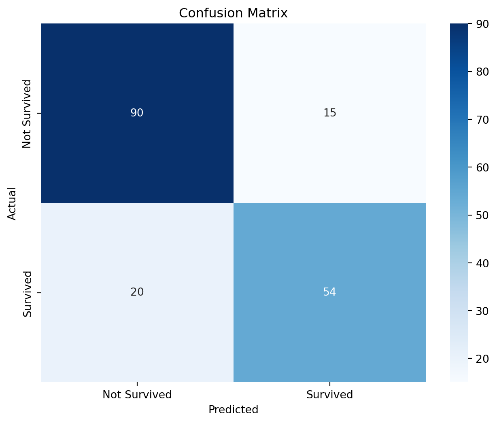

Code
import pandas as pd
# Load the Titanic dataset
data = pd.read_csv('train.csv')|
|
Probability theory is a mathematical framework used in machine learning to quantify uncertainty and model the likelihood of different events or outcomes. It provides a way to describe and analyze uncertainty, enabling algorithms to make informed decisions and predictions.
Random variables are variables in machine learning that can take on different values with some level of uncertainty or randomness. They represent the uncertain elements in a problem, such as outcomes of experiments or measurements.
To start, let’s import a real dataset from Kaggle. For this blog, we’ll use the “Titanic: Machine Learning from Disaster” dataset.
import pandas as pd
# Load the Titanic dataset
data = pd.read_csv('train.csv')Data pre-processing is a crucial step in any machine learning project. It involves handling missing values, encoding categorical variables, and scaling features. Let’s take a look at the data and perform some pre-processing.
# Check for missing values
missing_values = data.isnull().sum()
print(missing_values)
# Handle missing values (e.g., fill missing age values with the median)
data['Age'].fillna(data['Age'].median(), inplace=True)
# Encode categorical variables (e.g., convert 'Sex' to numerical values)
data['Sex'] = data['Sex'].map({'male': 0, 'female': 1})
# Select relevant features and target variable
X = data[['Pclass', 'Sex', 'Age', 'Fare']]
y = data['Survived']PassengerId 0
Survived 0
Pclass 0
Name 0
Sex 0
Age 177
SibSp 0
Parch 0
Ticket 0
Fare 0
Cabin 687
Embarked 2
dtype: int64To evaluate our machine learning model, we’ll split the dataset into training and testing sets. We’ll use 80% of the data for training and 20% for testing.
from sklearn.model_selection import train_test_split
# Split the data into training and testing sets (80% train, 20% test)
X_train, X_test, y_train, y_test = train_test_split(X, y, test_size=0.2, random_state=42)Now, let’s choose a machine learning algorithm to train our model. We’ll use logistic regression for this example.
from sklearn.linear_model import LogisticRegression
# Create a logistic regression model
clf = LogisticRegression(random_state=42)
# Fit the model to the training data
clf.fit(X_train, y_train)LogisticRegression(random_state=42)In a Jupyter environment, please rerun this cell to show the HTML representation or trust the notebook.
LogisticRegression(random_state=42)
With our model trained, we can make predictions on the test data.
# Predict survival outcomes for the test set
y_pred = clf.predict(X_test)To assess the model’s performance, we can create a confusion matrix and visualize it using a heatmap. Additionally, we’ll calculate and display classification metrics such as accuracy, precision, recall, and F1-score. This classification report provides valuable information about the model’s performance, including metrics for each class (survived and not survived).
from sklearn.metrics import confusion_matrix, classification_report
import seaborn as sns
import matplotlib.pyplot as plt
# Create a confusion matrix
conf_matrix = confusion_matrix(y_test, y_pred)
# Create a heatmap for the confusion matrix
plt.figure(figsize=(8, 6))
sns.heatmap(conf_matrix, annot=True, fmt='d', cmap='Blues', xticklabels=['Not Survived', 'Survived'], yticklabels=['Not Survived', 'Survived'])
plt.xlabel('Predicted')
plt.ylabel('Actual')
plt.title('Confusion Matrix')
plt.show()
# Generate a classification report
class_report = classification_report(y_test, y_pred)
print(class_report)
precision recall f1-score support
0 0.82 0.86 0.84 105
1 0.78 0.73 0.76 74
accuracy 0.80 179
macro avg 0.80 0.79 0.80 179
weighted avg 0.80 0.80 0.80 179